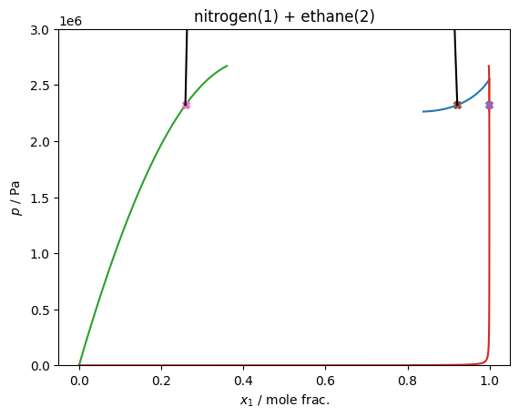

VLLE¶
Following the approach described in Bell et al.: https://doi.org/10.1021/acs.iecr.1c04703
for the mixture of nitrogen + ethane, with the default thermodynamic model in teqp, which is the GERG-2008 mixing parameters (no departure function).
Two traces are made, and the intersection is obtained, this gives you the VLLE solution.
[1]:
import teqp, numpy as np, matplotlib.pyplot as plt, pandas
def get_traces(*, T, ipures):
names = ['Nitrogen', 'Ethane']
model = teqp.build_multifluid_model(names, teqp.get_datapath())
pures = [teqp.build_multifluid_model([name], teqp.get_datapath()) for name in names]
traces = []
for ipure in ipures:
# Init at the pure fluid endpoint
anc = pures[ipure].build_ancillaries()
rhoLpure, rhoVpure = pures[ipure].pure_VLE_T(T, anc.rhoL(T), anc.rhoV(T), 10)
rhovecL = np.array([0.0, 0.0])
rhovecV = np.array([0.0, 0.0])
rhovecL[ipure] = rhoLpure
rhovecV[ipure] = rhoVpure
opt = teqp.TVLEOptions()
opt.p_termination = 1e8
opt.crit_termination=1e-4
opt.calc_criticality=True
j = model.trace_VLE_isotherm_binary(T, rhovecL, rhovecV, opt)
traces.append(j)
return model, traces
T = 120.3420
model, traces = get_traces(T=T, ipures=[0,1])
for trace in traces:
df = pandas.DataFrame(trace)
plt.plot(df['xL_0 / mole frac.'], df['pL / Pa'])
plt.plot(df['xV_0 / mole frac.'], df['pV / Pa'])
# Do the VLLE solving
for soln in model.find_VLLE_T_binary(traces):
print('rhovec / mol/m^3 | p / Pa')
for rhovec in soln['polished']:
rhovec = np.array(rhovec)
rhotot = sum(rhovec)
x = rhovec/rhotot
p = rhotot*model.get_R(x)*T*(1+model.get_Ar01(T, rhotot, x))
plt.plot(x[0], p, 'X')
print(rhovec, p)
# And also carry out the LLE trace for the two liquid phases
j = model.trace_VLE_isotherm_binary(T, np.array(soln['polished'][1]), np.array(soln['polished'][2]))
df = pandas.DataFrame(j)
plt.plot(df['xL_0 / mole frac.'], df['pL / Pa'], 'k')
plt.plot(df['xV_0 / mole frac.'], df['pV / Pa'], 'k')
# Plotting niceties
plt.ylim(top=3e6, bottom=0)
plt.gca().set(xlabel='$x_1$ / mole frac.', ylabel='$p$ / Pa', title='nitrogen(1) + ethane(2)')
plt.show()
rhovec / mol/m^3 | p / Pa
[3.66984834e+03 3.25893958e+00] 2321103.087319132
[19890.16767481 1698.86505766] 2321103.087318946
[ 5641.24690517 16140.85769908] 2321103.0873195715

[2]:
# Trace from both pure fluid endpoints
T = 113
model, traces = get_traces(T=T, ipures = [0,1])
# Find the VLLE solution for the starting temperature
solns = model.find_VLLE_T_binary(traces)
rhovecV, rhovecL1, rhovecL2 = solns[0]['polished']
# Obtain the VLLE trace towards higher temperatures
opt = teqp.VLLETracerOptions()
a = lambda x: np.array(x)
VLLE = model.trace_VLLE_binary(T, a(rhovecV), a(rhovecL1), a(rhovecL2), opt)
df = pandas.DataFrame(VLLE)
# Add the pressure to the DataFrame
def add_ps(row, key):
T = row['T / K']
rhovec = np.array(row[key])
rhotot = sum(rhovec)
x = rhovec/rhotot
p = rhotot*model.get_R(x)*T*(1+model.get_Ar01(T, rhotot, x))
return p
df['p / Pa'] = df.apply(add_ps, axis=1, key='rhoV / mol/m^3')
# Plot the p-T curve
plt.plot(df['T / K'], df['p / Pa'])
plt.gca().set(xlabel='$T$ / K', ylabel='$p$ / Pa');
plt.title('Nitrogen + ethane VLLE curve')
[2]:
Text(0.5, 1.0, 'Nitrogen + ethane VLLE curve')